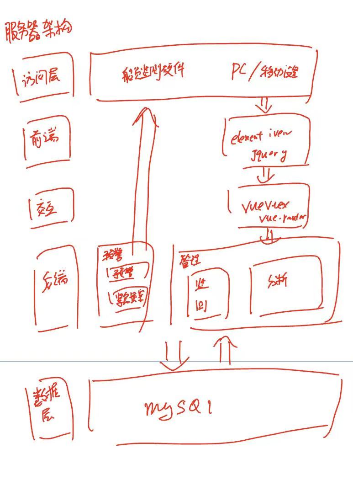

Flask-vue服务器架构
Flask-Vue服务器设计架构
前言
之前几天已经完成了硬件部分的内容，接下来需要解决服务器端的问题，由于本人对GUI有所要求，同时考虑到之后有可能会加入机器学习相关的算法，所以这里考虑采用python作为编程语言的后端框架Flask/Django，然后由于我对安全性要求并不是很高，所以这里采用轻量化的框架Flask。关于前端方面，我考虑有静态框架hexo，boostrape等以及动态框架react以及vue。这里由于我之后可能会加入一些视觉识别的内容，采用静态框架会限制我之后的显示，同时vue对中文的支持较好，且拥有elementui框架，有很多不错的套件。所以这里我考虑才有Flask+vue的架构，同时暂时考虑数据库为mysql，由于mysql的历史较长，有较多的资料以及实现较为简单。
总体架构

架构初步设想：

本博客所有文章除特别声明外，均采用 CC BY-NC-SA 4.0 许可协议。转载请注明来自 LokiAnder！